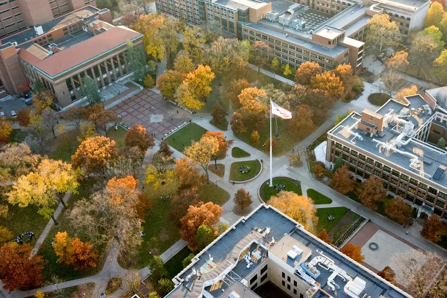

At the University of Michigan School of Information (UMSI), we are committed to supporting our students' academic success by offering a wide array of resources and services. Our academic advising team provides personalized guidance to help you navigate your curriculum, select courses, and address any academic challenges or questions you may encounter during your studies. UMSI students also have access to the extensive collections and study spaces within the University Library system, offering both digital and physical resources essential for research and coursework. Additionally, our specialized tutoring services and the UMSI Writing Center are available to support you in mastering complex subjects and enhancing your written communication skills. By utilizing these academic resources, UMSI students can thrive in their studies and achieve their educational goals.
BSI Academic Advising
Academic advising is a process where students envision, execute, and reflect on their academic plans with guidance from a qualified UMSI Academic Advisor. Students share their goals, challenges, and questions with their academic advisor, and their academic advisor contributes knowledge of university and program requirements, policies, and processes. Together, they develop an academic plan that aligns with the student's personal and professional goals.
Acadmic Support Services:
-
Advising Appointments:
Schedule one-on-one meetings with our advisors to discuss academic goals, career planning, and any concerns related to coursework. Visit: Academic Advising
Course Planning Assistance:
Get guidance on course selection to fulfill degree requirements and align with career aspirations. Visit: Curriculum
Library and Research Resources:
UMSI students have access to the vast collections and study spaces within the University Library system. These resources include both digital and physical materials essential for research and coursework.
-
Research Assistance:
Work with librarians to develop research strategies and locate relevant information. Visit: Library
Study Spaces:
Utilize quiet and collaborative study areas across campus. Visit: Study Spaces

Tutoring and Writing Support:
To ensure academic success, BSI students can take advantage of specialized tutoring services and writing support
-
Sweetland Writing Center:
Receive help with structuring essays, research papers, and improving writing clarity. Visit: Writing Help
Professional Development
-
Internship and Job Search Assistance:
Access resources to find internship and job opportunities relevant to the information field. Visit: Internships
Networking Events:
Connect with industry professionals and alumni to expand your professional network. Visit: Alumni